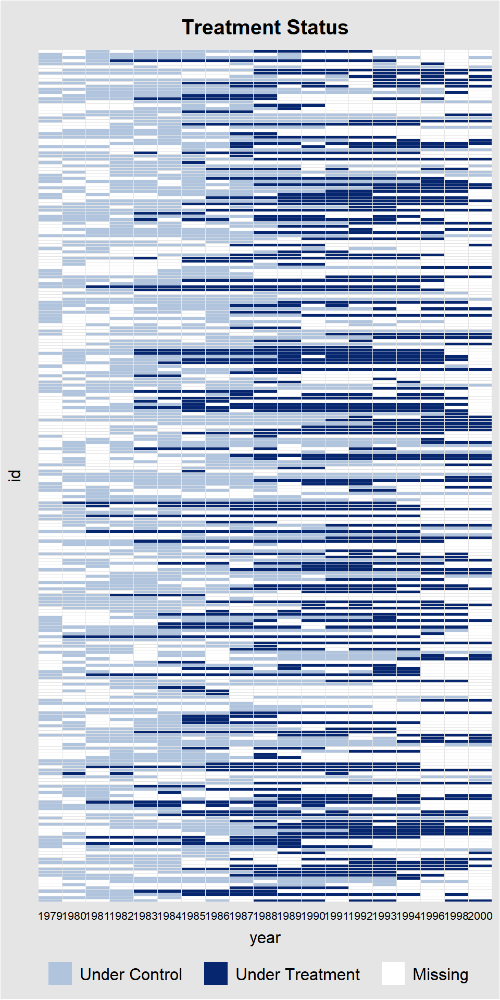

2) Extensions
Tobias Rüttenauer
December 03, 2021
Required packages
pkgs <- c("plm", "feisr", "did", "panelView", "texreg", "tidyr", "dplyr", "ggplot2", "ggforce")
lapply(pkgs, require, character.only = TRUE)Session info
sessionInfo()## R version 4.1.0 (2021-05-18)
## Platform: x86_64-w64-mingw32/x64 (64-bit)
## Running under: Windows 10 x64 (build 19042)
##
## Matrix products: default
##
## locale:
## [1] LC_COLLATE=English_United Kingdom.1252
## [2] LC_CTYPE=English_United Kingdom.1252
## [3] LC_MONETARY=English_United Kingdom.1252
## [4] LC_NUMERIC=C
## [5] LC_TIME=English_United Kingdom.1252
##
## attached base packages:
## [1] stats graphics grDevices utils datasets methods base
##
## other attached packages:
## [1] ggforce_0.3.3 ggplot2_3.3.5 dplyr_1.0.6 tidyr_1.1.3
## [5] texreg_1.37.5 panelView_1.1.2 did_2.0.0 feisr_1.2.0
## [9] plm_2.4-1
##
## loaded via a namespace (and not attached):
## [1] httr_1.4.2 sass_0.4.0 jsonlite_1.7.2 carData_3.0-4
## [5] bslib_0.2.5.1 Formula_1.2-4 Rdpack_2.1.2 assertthat_0.2.1
## [9] cellranger_1.1.0 yaml_2.2.1 pillar_1.6.2 backports_1.2.1
## [13] lattice_0.20-44 glue_1.4.2 digest_0.6.27 polyclip_1.10-0
## [17] ggsignif_0.6.2 rbibutils_2.2 colorspace_2.0-1 sandwich_3.0-1
## [21] htmltools_0.5.1.1 pkgconfig_2.0.3 broom_0.7.7 haven_2.4.2
## [25] purrr_0.3.4 scales_1.1.1 tweenr_1.0.2 openxlsx_4.2.4
## [29] rio_0.5.26 tibble_3.1.2 farver_2.1.0 generics_0.1.0
## [33] car_3.0-11 ellipsis_0.3.2 ggpubr_0.4.0 withr_2.4.2
## [37] maxLik_1.4-8 magrittr_2.0.1 crayon_1.4.1 readxl_1.3.1
## [41] evaluate_0.14 fansi_0.5.0 nlme_3.1-152 MASS_7.3-54
## [45] rstatix_0.7.0 forcats_0.5.1 foreign_0.8-81 tools_4.1.0
## [49] data.table_1.14.0 hms_1.1.0 lifecycle_1.0.0 stringr_1.4.0
## [53] munsell_0.5.0 zip_2.2.0 compiler_4.1.0 jquerylib_0.1.4
## [57] rlang_0.4.11 grid_4.1.0 miscTools_0.6-26 rmarkdown_2.11
## [61] gtable_0.3.0 abind_1.4-5 DBI_1.1.1 curl_4.3.1
## [65] R6_2.5.1 gridExtra_2.3 zoo_1.8-9 knitr_1.33
## [69] bdsmatrix_1.3-4 utf8_1.2.1 stringi_1.6.2 Rcpp_1.0.7
## [73] vctrs_0.3.8 tidyselect_1.1.1 xfun_0.23 lmtest_0.9-38Outline
Fixed Effects Individual Slopes
Dynamic treatment effects
Dynamic Diff-in-Diff
Synthetic Control
TBD: Generalized Synthetic Control
Fixed Effects Individual Slopes (FEIS)
Remeber that we have to make the parallel trends assumption in twoways FE models. A violation of the parallel trends assumption leads to biased estimates. Usually, when controlling for time fixed effects, we make the assumption that every observation experiences the same “effect of time.”
However, we can relax this assumption by giving each individual their own intercept and their own slope.
The fixed effects individual slope (FEIS) estimator is a more general version of the well-known fixed effects estimator (FE), which allows to control for heterogeneous slopes in addition to time-constant heterogeneity (e.g. Brüderl and Ludwig 2015; Polachek and Kim 1994; Rüttenauer and Ludwig 2020; Wooldridge 2010). Formally, the FEIS estimator can be expressed as
\[ \begin{align} \boldsymbol{\mathbf{y}}_{i} =& \boldsymbol{\mathbf{X}}_{i}\boldsymbol{\mathbf{\beta }}+ \boldsymbol{\mathbf{W}}_i \boldsymbol{\mathbf{\alpha}}_i + \boldsymbol{\mathbf{\epsilon}}_{i}, \end{align} \] where \(\boldsymbol{\mathbf{y}}_{i}\) is \(T \times 1\), \(\boldsymbol{\mathbf{X}}_{i}\) is \(T \times K\), and \(\boldsymbol{\mathbf{\epsilon}}_{i}\) is \(T \times 1\). \(\boldsymbol{\mathbf{W}}_i\) is a \(T \times J\) matrix of slope variables, and \(\boldsymbol{\mathbf{\alpha}}_i\) a \(J \times 1\) vector of individual-specific slope parameters, for \(J\) slope parameters including a constant term. If \(\boldsymbol{\mathbf{W}}_i\) consists of a constant term only, \(\boldsymbol{\mathbf{W}}_i = \boldsymbol{\mathbf{1}}\), thus \(\boldsymbol{\mathbf{\alpha}}_i\) reduces to \(\alpha_{i1}\), and the above equation represents the well-known formula of a conventional FE model with individual fixed effects.
As with the conventional FE, FEIS can be estimated using lm() by including \(N-1\) individual-specific dummies and interaction terms of each slope variable with the \(N-1\) individual-specific dummies (\((N-1) *J\) controls). This is however highly inefficient. As with the conventional FE estimator, we can achieve the same result by running an lm() on pre-transformed data. Therefore, specify the ‘residual maker’ matrix \(\boldsymbol{\mathbf{M}}_i = \boldsymbol{\mathbf{I}}_T - \boldsymbol{\mathbf{W}}_i(\boldsymbol{\mathbf{W}}^\intercal_i \boldsymbol{\mathbf{W}}_i)^{-1}\boldsymbol{\mathbf{W}}^\intercal_i\), and estimate \[
\begin{align}
y_{it} - \hat{y}_{it} =& (\boldsymbol{\mathbf{x}}_{it} - \hat{\boldsymbol{\mathbf{x}}}_{it})\boldsymbol{\mathbf{\beta }}+ \epsilon_{it} - \hat{\epsilon}_{it}, \\
\boldsymbol{\mathbf{M}}_i \boldsymbol{\mathbf{y}}_i =& \boldsymbol{\mathbf{M}}_i \boldsymbol{\mathbf{X}}_i\boldsymbol{\mathbf{\beta }}+ \boldsymbol{\mathbf{M}}_i \boldsymbol{\mathbf{\epsilon}}_{i}, \\
\tilde{\boldsymbol{\mathbf{y}}}_{i} =& \tilde{\boldsymbol{\mathbf{X}}}_{i}\boldsymbol{\mathbf{\beta }}+ \tilde{\boldsymbol{\mathbf{\epsilon}}}_{i},
\end{align}
\] where \(\tilde{\boldsymbol{\mathbf{y}}}_{i}\), \(\tilde{\boldsymbol{\mathbf{X}}}_{i}\), and \(\tilde{\boldsymbol{\mathbf{\epsilon}}}_{i}\) are the residuals of regressing \(\boldsymbol{\mathbf{y}}_{i}\), each column-vector of \(\boldsymbol{\mathbf{X}}_{i}\), and \(\boldsymbol{\mathbf{\epsilon}}_{i}\) on \(\boldsymbol{\mathbf{W}}_i\).
Intuitively, we
estimate the individual-specific predicted values for the dependent variable and each covariate based on an individual intercept and the additional slope variables of \(\boldsymbol{\mathbf{W}}_i\),
‘detrend’ the original data by these individual-specific predicted values, and
run an OLS model on the residual (‘detrended’) data.
Similarly, we can estimate a correlated random effects (CRE) model (Chamberlain 1982; Mundlak 1978; Wooldridge 2010) including the individual specific predictions \(\hat{\boldsymbol{\mathbf{X}}}_{i}\) to obtain the FEIS estimator: \[ \begin{align} \boldsymbol{\mathbf{y}}_{i} =& \boldsymbol{\mathbf{X}}_{i}\boldsymbol{\mathbf{\beta }}+ \hat{\boldsymbol{\mathbf{X}}}_{i}\boldsymbol{\mathbf{\rho }}+ \boldsymbol{\mathbf{\epsilon}}_{i}. \end{align} \]
Example
As an example, we use the mwp panel data, containing information on wages and family status of 268 men. This is a random sample drawn from the National Longitudinal Survey of Youth (Bureau of Labor Statistics 2014), and more details on the selection of observations and variable construction can be found in Ludwig and Brüderl (2018).
data("mwp", package = "feisr")
head(mwp)## id year lnw exp expq marry evermarry enrol yeduc age cohort
## 1 1 1981 1.934358 1.076923 1.159763 0 1 1 11 18 1963
## 2 1 1983 2.468140 3.019231 9.115755 0 1 1 12 20 1963
## 3 1 1984 2.162480 4.038462 16.309174 0 1 1 12 21 1963
## 4 1 1985 1.746280 5.076923 25.775146 0 1 0 12 22 1963
## 5 1 1986 2.527840 6.096154 37.163090 0 1 1 13 23 1963
## 6 1 1987 2.365361 7.500000 56.250000 0 1 1 13 24 1963
## yeargr yeargr1 yeargr2 yeargr3 yeargr4 yeargr5
## 1 2 0 1 0 0 0
## 2 2 0 1 0 0 0
## 3 2 0 1 0 0 0
## 4 2 0 1 0 0 0
## 5 3 0 0 1 0 0
## 6 3 0 0 1 0 0The data set contains a unique person identifier (id) and survey year indicator (year). Furthermore, we have information about the log hourly wage rate (lnwage), work experience (exp) and its square (expq), family status (marry), enrollment in current education (enrol), years of formal education education (yeduc), age (age), birth cohort (cohort), and a grouped year indicator (yeargr).
we exemplary investigate the ‘marriage wage premium’: we analyze whether marriage leads to an increase in the hourly wage for men. We use the function feis to estimate fixed effects individual slope models to control for the hypothesis that those men who are more likely to marry or marry earlier, also have a steeper wage growth over time.
Let’s start with our most common panel models (FE and RE):
wages.fe <- plm(lnw ~ marry + enrol + yeduc + as.factor(yeargr)
+ exp + I(exp^2), data = mwp, index = c("id", "year"),
model = "within", effect = "individual")
wages.re <- plm(lnw ~ marry + enrol + yeduc + as.factor(yeargr)
+ exp + I(exp^2), data = mwp, index = c("id", "year"),
model = "random", effect = "individual")
summary(wages.fe)## Oneway (individual) effect Within Model
##
## Call:
## plm(formula = lnw ~ marry + enrol + yeduc + as.factor(yeargr) +
## exp + I(exp^2), data = mwp, effect = "individual", model = "within",
## index = c("id", "year"))
##
## Unbalanced Panel: n = 268, T = 4-19, N = 3100
##
## Residuals:
## Min. 1st Qu. Median 3rd Qu. Max.
## -2.5870006 -0.1580744 0.0081262 0.1701488 1.9958088
##
## Coefficients:
## Estimate Std. Error t-value Pr(>|t|)
## marry 0.07773216 0.02160148 3.5985 0.0003256 ***
## enrol -0.20810059 0.02282898 -9.1156 < 2.2e-16 ***
## yeduc 0.05584485 0.00715655 7.8033 8.424e-15 ***
## as.factor(yeargr)2 -0.14080625 0.03036533 -4.6371 3.694e-06 ***
## as.factor(yeargr)3 -0.16453499 0.04696595 -3.5033 0.0004667 ***
## as.factor(yeargr)4 -0.27553668 0.06196892 -4.4464 9.071e-06 ***
## as.factor(yeargr)5 -0.29750723 0.07932341 -3.7506 0.0001800 ***
## exp 0.07299927 0.00867777 8.4122 < 2.2e-16 ***
## I(exp^2) -0.00127502 0.00036103 -3.5317 0.0004196 ***
## ---
## Signif. codes: 0 '***' 0.001 '**' 0.01 '*' 0.05 '.' 0.1 ' ' 1
##
## Total Sum of Squares: 559.75
## Residual Sum of Squares: 327.88
## R-Squared: 0.41424
## Adj. R-Squared: 0.35697
## F-statistic: 221.816 on 9 and 2823 DF, p-value: < 2.22e-16and we calculate panel robust standard errors and attach them back to the model output:
# Calculate vcov
vcovx_fe <- vcovHC(wages.fe, cluster = "group", method = "arellano", type = "HC3")
vcovx_re <- vcovHC(wages.re, cluster = "group", method = "arellano", type = "HC3")
# Replace original vcov in output
wages.fe$vcov <- vcovx_fe
wages.re$vcov <- vcovx_reReplacing the vcov in the model output has the advantage that we now use the cluster robust SEs in all following operations (like summary() or screenreg).
summary(wages.fe)## Oneway (individual) effect Within Model
##
## Call:
## plm(formula = lnw ~ marry + enrol + yeduc + as.factor(yeargr) +
## exp + I(exp^2), data = mwp, effect = "individual", model = "within",
## index = c("id", "year"))
##
## Unbalanced Panel: n = 268, T = 4-19, N = 3100
##
## Residuals:
## Min. 1st Qu. Median 3rd Qu. Max.
## -2.5870006 -0.1580744 0.0081262 0.1701488 1.9958088
##
## Coefficients:
## Estimate Std. Error t-value Pr(>|t|)
## marry 0.07773216 0.03160634 2.4594 0.0139771 *
## enrol -0.20810059 0.02738300 -7.5996 4.015e-14 ***
## yeduc 0.05584485 0.01025801 5.4440 5.656e-08 ***
## as.factor(yeargr)2 -0.14080625 0.03554205 -3.9617 7.627e-05 ***
## as.factor(yeargr)3 -0.16453499 0.05338645 -3.0820 0.0020763 **
## as.factor(yeargr)4 -0.27553668 0.06829208 -4.0347 5.613e-05 ***
## as.factor(yeargr)5 -0.29750723 0.08916462 -3.3366 0.0008591 ***
## exp 0.07299927 0.01245954 5.8589 5.198e-09 ***
## I(exp^2) -0.00127502 0.00057274 -2.2262 0.0260794 *
## ---
## Signif. codes: 0 '***' 0.001 '**' 0.01 '*' 0.05 '.' 0.1 ' ' 1
##
## Total Sum of Squares: 559.75
## Residual Sum of Squares: 327.88
## R-Squared: 0.41424
## Adj. R-Squared: 0.35697
## F-statistic: 77.9716 on 9 and 2823 DF, p-value: < 2.22e-16And finally, we allow for individual specific trends. To replicate the analysis of Ludwig and Brüderl (2018), we use work experience (exp) and squared work experience as the slope variables.
One mayor advantage of using work experience as slope is that we can still control for (grouped) time fixed effects
Assuming linear trends (only using exp), is a strong assumption. However, for each additional slope (e.g. polynomial), FEIS becomes more data hungry: each individual needs at least \(T \geq K + 1\) observations to contribute to the model. If not, they are dropped!
Here we use feis with panel robust standard errors. The command felm from lfe can be used to calculate individual slopes as well.
wages.feis <- feis(lnw ~ marry + enrol + yeduc + as.factor(yeargr)
| exp + I(exp^2), data = mwp, id = "id",
robust = TRUE)
summary(wages.feis)##
##
## Call:
## feis(formula = lnw ~ marry + enrol + yeduc + as.factor(yeargr) |
## exp + I(exp^2), data = mwp, id = "id", robust = TRUE)
##
##
## Residuals:
## Min. 1st Qu. Median 3rd Qu. Max.
## -2.0790815 -0.1050450 0.0046876 0.1112708 1.9412090
##
## Coefficients:
## Estimate Std. Error t-value Pr(>|t|)
## marry 0.0134582 0.0292771 0.4597 0.64579
## enrol -0.1181725 0.0235003 -5.0286 5.325e-07 ***
## yeduc -0.0020607 0.0175059 -0.1177 0.90630
## as.factor(yeargr)2 -0.0464504 0.0378675 -1.2267 0.22008
## as.factor(yeargr)3 -0.0189333 0.0524265 -0.3611 0.71803
## as.factor(yeargr)4 -0.1361305 0.0615033 -2.2134 0.02697 *
## as.factor(yeargr)5 -0.1868589 0.0742904 -2.5152 0.01196 *
## ---
## Signif. codes: 0 '***' 0.001 '**' 0.01 '*' 0.05 '.' 0.1 ' ' 1
##
## Cluster robust standard errors
## Slope parameters: exp, I(exp^2)
## Total Sum of Squares: 190.33
## Residual Sum of Squares: 185.64
## R-Squared: 0.024626
## Adj. R-Squared: 0.022419Let’s compare the results.
screenreg(list(wages.re, wages.fe, wages.feis), digits = 3,
custom.model.names = c("RE", "FE", "FEIS"))##
## ============================================================
## RE FE FEIS
## ------------------------------------------------------------
## (Intercept) 1.562 ***
## (0.094)
## marry 0.091 ** 0.078 * 0.013
## (0.032) (0.032) (0.029)
## enrol -0.202 *** -0.208 *** -0.118 ***
## (0.025) (0.027) (0.024)
## yeduc 0.063 *** 0.056 *** -0.002
## (0.008) (0.010) (0.018)
## as.factor(yeargr)2 -0.157 *** -0.141 *** -0.046
## (0.034) (0.036) (0.038)
## as.factor(yeargr)3 -0.197 *** -0.165 ** -0.019
## (0.050) (0.053) (0.052)
## as.factor(yeargr)4 -0.316 *** -0.276 *** -0.136 *
## (0.066) (0.068) (0.062)
## as.factor(yeargr)5 -0.349 *** -0.298 *** -0.187 *
## (0.089) (0.089) (0.074)
## exp 0.074 *** 0.073 ***
## (0.012) (0.012)
## exp^2 -0.001 * -0.001 *
## (0.001) (0.001)
## ------------------------------------------------------------
## s_idios 0.341
## s_id 0.279
## R^2 0.440 0.414 0.025
## Adj. R^2 0.439 0.357 0.022
## Num. obs. 3100 3100 3100
## Num. groups: id 268
## RMSE 0.285
## ============================================================
## *** p < 0.001; ** p < 0.01; * p < 0.05Interpretation:
RE: Married observations have a significantly higher wage than unmarried observations.
FE: If people marry, they experience an increase in wages afterwards. The effect is significant and slightly lower than the RE.
FEIS: Accounting for the individual wage trend before marriage, we do not observe an increase in wages if people marry. The effect is small and non-significant.
Overall, this indicates that there is a problem with non-parallel trends: Those with steeper wage trajectories are more likely to marry (or marry earlier).
As mentioned above, we can achieve the same by 1) manually calculating the individual specific trends and 2) including them as additional covariates in the model.
### Individual predicted value of covariates
vars <- c("marry", "enrol", "yeduc",
"yeargr2", "yeargr3", "yeargr4", "yeargr5")
for(v in vars){
fm <- as.formula(paste(v, "~ exp + expq"))
pred_x <- by(mwp[, c(v, "exp", "expq")],
mwp$id,
FUN = function(z) predict(lm(fm, data = z)))
pred_x <- unlist(pred_x)
mwp[, paste0("pred_", v)] <- pred_x
}
head(mwp[, c("id", "pred_marry", "pred_enrol")], n = 20)## id pred_marry pred_enrol
## 1 1 -0.12205318 1.206579223
## 2 1 -0.03068796 0.863033817
## 3 1 0.03926230 0.716309276
## 4 1 0.12611077 0.590568171
## 5 1 0.22664093 0.490467488
## 6 1 0.38990636 0.390403467
## 7 1 0.54837205 0.340389443
## 8 1 0.66317654 0.324200699
## 9 1 0.87480284 0.326554307
## 10 1 1.04489924 0.351640932
## 11 1 1.23957011 0.399853176
## 12 2 0.00000000 1.103938282
## 13 2 0.00000000 0.503880518
## 14 2 0.00000000 0.304456317
## 15 2 0.00000000 0.176757843
## 16 2 0.00000000 0.012061441
## 17 2 0.00000000 -0.105551709
## 18 2 0.00000000 0.004457309
## 19 3 0.00000000 0.000000000
## 20 3 0.00000000 0.000000000This gives us individual-specific predicted values of each covariate based on and intercept, exp and expsq. Note that - in contrast to person-specific means - these predicted values (can) vary within a person.
Do you know why person-id 2 has all zeros on the pre_marry variable?
Using these individual predicted values, we can retreive the FEIS estimates in a Mundlak-style model.
wages.lmfeis <- lm(lnw ~ marry + enrol + yeduc + as.factor(yeargr) +
pred_marry + pred_enrol + pred_yeduc +
pred_yeargr2 + pred_yeargr3 + pred_yeargr4 + pred_yeargr5,
data = mwp)
screenreg(list(wages.feis, wages.lmfeis), digits = 3,
custom.model.names = c("FEIS", "Manual FEIS"))##
## ==============================================
## FEIS Manual FEIS
## ----------------------------------------------
## marry 0.013 0.013
## (0.029) (0.043)
## enrol -0.118 *** -0.118 **
## (0.024) (0.037)
## yeduc -0.002 -0.002
## (0.018) (0.022)
## as.factor(yeargr)2 -0.046 -0.046
## (0.038) (0.055)
## as.factor(yeargr)3 -0.019 -0.019
## (0.052) (0.080)
## as.factor(yeargr)4 -0.136 * -0.136
## (0.062) (0.097)
## as.factor(yeargr)5 -0.187 * -0.187
## (0.074) (0.121)
## (Intercept) 1.576 ***
## (0.056)
## pred_marry 0.269 ***
## (0.048)
## pred_enrol -0.238 ***
## (0.048)
## pred_yeduc 0.079 ***
## (0.022)
## pred_yeargr2 -0.061
## (0.074)
## pred_yeargr3 -0.012
## (0.092)
## pred_yeargr4 0.169
## (0.110)
## pred_yeargr5 0.347 **
## (0.132)
## ----------------------------------------------
## R^2 0.025 0.359
## Adj. R^2 0.022 0.356
## Num. obs. 3100 3100
## Num. groups: id 268
## RMSE 0.285
## ==============================================
## *** p < 0.001; ** p < 0.01; * p < 0.05Note, however, that this manual approach will lead to incorrect standard errors!
Dynamic treatment effects
Often, we are not only interested in the overall treatment effect, but we also want to know how treatment effects unfold after a treatment. For example, how does happiness change around specific life course events (Clark and Georgellis 2013), or how do housing prices develop after the opening of an industrial plant (Currie et al. 2015)?
There are various ways of calculating how a treatment effect develops over time:

Various impact functions for event study designs from Brüderl/Ludwig 2019 teaching materials
Usually, it is best to not impose a structural form, but rather to use dummy impact functions. However, even with this, there is an ongoing debate on what is the best choice of specification (Ludwig and Brüderl 2021), or see for instance blog post by Pedro H. C. Sant’Anna and Brantly Callaway.
Note that these settings usually require a staggered treatment adoption: individuals are treated once, and afterwards reamin treated
There are many cases where this does not apply. However, one can think about potential ways of artificially creating such designs:
Dichotomize continuous treatments (if theoretically plausible!)
Create id-period splits. E.g. if a person gets divorced, either drop from sample, or treat as a “new id” as a person can re-marry (note that this assumes that first and second marriage have equal effects).
Example
We stick with our example and try to estimate how the wage changes around the year of marriage.
To do so, we first estimate make sure the data is ordered by id and time
mwp <- mwp[order(mwp$id, mwp$year), ]
head(mwp[, 1:6], n = 20)## id year lnw exp expq marry
## 1 1 1981 1.934358 1.0769231 1.1597635 0
## 2 1 1983 2.468140 3.0192308 9.1157551 0
## 3 1 1984 2.162480 4.0384617 16.3091736 0
## 4 1 1985 1.746280 5.0769229 25.7751465 0
## 5 1 1986 2.527840 6.0961537 37.1630898 0
## 6 1 1987 2.365361 7.5000000 56.2500000 0
## 7 1 1988 2.467478 8.6730766 75.2222595 1
## 8 1 1989 4.398027 9.4423075 89.1571732 1
## 9 1 1990 2.822144 10.7307692 115.1494064 1
## 10 1 1991 2.654965 11.6730766 136.2607117 1
## 11 1 1992 2.665088 12.6730766 160.6068726 1
## 12 2 1979 2.236233 0.9423077 0.8879438 0
## 13 2 1981 2.916389 2.9615386 8.7707109 0
## 14 2 1982 2.751646 3.8269231 14.6453409 0
## 15 2 1983 2.629372 4.4807692 20.0772915 0
## 16 2 1984 2.965442 5.5384617 30.6745586 0
## 17 2 1985 2.890669 6.6538463 44.2736702 0
## 18 2 1989 2.392579 11.1538458 124.4082794 0
## 19 3 1979 2.456405 1.1730769 1.3761094 0
## 20 3 1980 2.661142 2.1153846 4.4748521 0Then, we make sure that our data looks like a staggered treatment design. Are there people who jump from married to not married in the data?
# Change in marriage status within an id
mwp$fd_marry <- ave(mwp$marry,
mwp$id,
FUN = function(x) x - dplyr::lag(x, 1, default = 0)) # 0 insteat of NA for 1st year
# Mark observations starting with a negative fd value (jump from marry=1 to marry =0)
mwp$notstag_marry <- ave(ifelse(mwp$fd_marry == -1, 1, 0),
mwp$id,
FUN = function(x) cumsum(x))
table(mwp$fd_marry)##
## 0 1
## 2896 204table(mwp$notstag_marry)##
## 0
## 3100Luckily, the dataset is already cleaned: there are only transitions into marriage, not out of marriage.
Next we want to make sure if there are any individuals who already start with the treatment (who are married right from their first wave on).
We only want to have those in our sample who potentially can go from not-treated to treated!
mwp <- mwp[order(mwp$id, mwp$year), ] # just to be sure
# Person year number
mwp$pynr <- ave(mwp$year,
mwp$id,
FUN = function(x) 1:length(x))
# Marry status at first wave
mwp$f_marry <- ifelse(mwp$pynr == 1, mwp$marry, NA)
# Distribute across individual, using mean and na.rm = TRUE
mwp$f_marry <- ave(mwp$f_marry,
mwp$id,
FUN = function(x) mean(x, na.rm = TRUE))
table(mwp$f_marry)##
## 0
## 3100Again, someone has already done the job. There are no individuals who start married in the first wave.
We can also look at this graphically with panelView (mainly helpful for small N data):
panelView(lnw ~ marry,
data = mwp, index = c("id","year"),
type = "treat", theme.bw = TRUE)
Alright, so lets create a dummy impact function / a count variable around the treatment.
mwp <- mwp[order(mwp$id, mwp$year), ] # just to be sure!!
# Function that creates distance to the treatment (assuming 0=control, 1=treated)
impfun <- function(x, default = -99){
nas <- which(is.na(x)) #save nas
ft <- which(x == 1)[1] #first teatment index
if(is.na(ft)){ #replicate default if never treated
count <- rep(default, length(x))
}else{
ri <- 1:length(x) #running index
count <- ri - ft #distance to first treatment
}
if(length(nas) != 0){ #replace nas if any
count[nas] <- NA
}
return(count) #return counter
}
# Apply to each individual
mwp$marry_if <- ave(mwp$marry,
mwp$id,
FUN = function(x) impfun(x))
head(mwp[, c("id", "year", "marry", "marry_if")], n = 50)## id year marry marry_if
## 1 1 1981 0 -6
## 2 1 1983 0 -5
## 3 1 1984 0 -4
## 4 1 1985 0 -3
## 5 1 1986 0 -2
## 6 1 1987 0 -1
## 7 1 1988 1 0
## 8 1 1989 1 1
## 9 1 1990 1 2
## 10 1 1991 1 3
## 11 1 1992 1 4
## 12 2 1979 0 -99
## 13 2 1981 0 -99
## 14 2 1982 0 -99
## 15 2 1983 0 -99
## 16 2 1984 0 -99
## 17 2 1985 0 -99
## 18 2 1989 0 -99
## 19 3 1979 0 -99
## 20 3 1980 0 -99
## 21 3 1981 0 -99
## 22 3 1982 0 -99
## 23 3 1983 0 -99
## 24 3 1984 0 -99
## 25 3 1985 0 -99
## 26 3 1986 0 -99
## 27 3 1987 0 -99
## 28 3 1988 0 -99
## 29 3 1989 0 -99
## 30 3 1993 0 -99
## 31 3 1994 0 -99
## 32 3 2000 0 -99
## 33 4 1979 0 -2
## 34 4 1981 0 -1
## 35 4 1982 1 0
## 36 4 1983 1 1
## 37 4 1984 1 2
## 38 4 1985 1 3
## 39 4 1986 1 4
## 40 4 1987 1 5
## 41 4 1988 1 6
## 42 4 1989 1 7
## 43 4 1990 1 8
## 44 4 1991 1 9
## 45 4 1992 1 10
## 46 4 1993 1 11
## 47 5 1979 0 -6
## 48 5 1980 0 -5
## 49 5 1981 0 -4
## 50 5 1982 0 -3We can now use this time count function to estimate dynamic treatment effects.
Note that we need to make to important decisions (blog post by Pedro H. C. Sant’Anna and Brantly Callaway):
Which dates to use a reference category
How many pre-treatment periods to include (to test for anticipation or potential pre-treatment differences)
Here, re will just include three periods before marriage and use the rest as reference categories
# Set all before -3 to -99
mwp$marry_if[mwp$marry_if < -3 & mwp$marry_if > -99] <- -99
# Make factor with -99 as reference category
mwp$marry_if <- as.factor(mwp$marry_if)
mwp$marry_if <- relevel(mwp$marry_if, "-99")And we use this as our treatment variable in the FE estimator.
# Standard marriage indicator
wages.fe <- plm(lnw ~ marry + enrol + yeduc + as.factor(yeargr)
+ exp + I(exp^2), data = mwp, index = c("id", "year"),
model = "within", effect = "individual")
# with dummy impact function
wages2.fe <- plm(lnw ~ marry_if + enrol + yeduc + as.factor(yeargr)
+ exp + I(exp^2), data = mwp, index = c("id", "year"),
model = "within", effect = "individual")
# add cluster robust SEs
vcovx_fe2 <- vcovHC(wages2.fe, cluster = "group", method = "arellano", type = "HC3")
wages2.fe$vcov <- vcovx_fe2
summary(wages2.fe)## Oneway (individual) effect Within Model
##
## Call:
## plm(formula = lnw ~ marry_if + enrol + yeduc + as.factor(yeargr) +
## exp + I(exp^2), data = mwp, effect = "individual", model = "within",
## index = c("id", "year"))
##
## Unbalanced Panel: n = 268, T = 4-19, N = 3100
##
## Residuals:
## Min. 1st Qu. Median 3rd Qu. Max.
## -2.566752 -0.160001 0.010038 0.175003 2.011790
##
## Coefficients:
## Estimate Std. Error t-value Pr(>|t|)
## marry_if-3 0.03388225 0.03253942 1.0413 0.2978411
## marry_if-2 0.05166995 0.04238715 1.2190 0.2229466
## marry_if-1 0.09151624 0.04265046 2.1457 0.0319803 *
## marry_if0 0.08816919 0.05121551 1.7215 0.0852644 .
## marry_if1 0.15544954 0.05601346 2.7752 0.0055530 **
## marry_if2 0.15658061 0.06078860 2.5758 0.0100509 *
## marry_if3 0.16687443 0.06762257 2.4677 0.0136564 *
## marry_if4 0.14591461 0.07412203 1.9686 0.0491005 *
## marry_if5 0.14033773 0.07930392 1.7696 0.0768992 .
## marry_if6 0.15706194 0.08660097 1.8136 0.0698418 .
## marry_if7 0.13008248 0.09727237 1.3373 0.1812327
## marry_if8 0.11979150 0.10451397 1.1462 0.2518197
## marry_if9 0.14007172 0.10390453 1.3481 0.1777412
## marry_if10 0.11550144 0.11151584 1.0357 0.3004126
## marry_if11 0.20483579 0.12281306 1.6679 0.0954538 .
## marry_if12 0.10767466 0.12345702 0.8722 0.3831940
## marry_if13 0.10542488 0.13897395 0.7586 0.4481589
## marry_if14 -0.13934447 0.12815514 -1.0873 0.2769929
## enrol -0.20477142 0.02737332 -7.4807 9.833e-14 ***
## yeduc 0.05500238 0.01059840 5.1897 2.257e-07 ***
## as.factor(yeargr)2 -0.13830215 0.03594278 -3.8478 0.0001218 ***
## as.factor(yeargr)3 -0.16356110 0.05379641 -3.0404 0.0023847 **
## as.factor(yeargr)4 -0.27248909 0.06839547 -3.9840 6.948e-05 ***
## as.factor(yeargr)5 -0.28895919 0.08907335 -3.2441 0.0011922 **
## exp 0.06728858 0.01357307 4.9575 7.565e-07 ***
## I(exp^2) -0.00111675 0.00061151 -1.8262 0.0679250 .
## ---
## Signif. codes: 0 '***' 0.001 '**' 0.01 '*' 0.05 '.' 0.1 ' ' 1
##
## Total Sum of Squares: 559.75
## Residual Sum of Squares: 325.96
## R-Squared: 0.41767
## Adj. R-Squared: 0.35686
## F-statistic: 75.8727 on 26 and 2806 DF, p-value: < 2.22e-16Let’s plot that
# Set up results matrix
coef.df <- data.frame(matrix(NA,
nrow = (length(levels(mwp$marry_if)) - 1),
ncol = 3))
colnames(coef.df) <- c("time", "att", "se")
# paste results
coef.df$time <- c(-3:14)
output <- summary(wages2.fe)$coefficients
coef.df[, c("att", "se")] <- output[which(grepl("marry_if", rownames(output))), 1:2]
# 95% CI
interval2 <- -qnorm((1-0.95)/2) # 95% multiplier
coef.df$ll <- coef.df$att - coef.df$se*interval2
coef.df$ul <- coef.df$att + coef.df$se*interval2
# Plot
zp1 <- ggplot(coef.df[coef.df$time < 7, ],
aes(x = time, y = att)) +
geom_pointrange(aes(x = time, y = att, ymin = ll, ymax = ul),
lwd = 1, fatten = 2) +
geom_line(aes(x = time, y = att)) +
geom_hline(yintercept = 0, colour = gray(1/2), lty = 2, lwd = 1) +
geom_vline(xintercept = -0.5, colour = "black", lty = 1, lwd = 1) +
theme_bw()
zp1
An interesting finding here. There is a positive anticipation effect: “The anticipation of marriage already increases the husbands wage.”
Is this plausible?
FEIS
Obviously, we can also use these dummy impact function in other estimators.
### FEIS with dummy impact function
wages2.feis <- feis(lnw ~ marry_if + enrol + yeduc + as.factor(yeargr)
| exp + I(exp^2),
data = mwp, id = "id",
robust = TRUE)
summary(wages2.feis)##
##
## Call:
## feis(formula = lnw ~ marry_if + enrol + yeduc + as.factor(yeargr) |
## exp + I(exp^2), data = mwp, id = "id", robust = TRUE)
##
##
## Residuals:
## Min. 1st Qu. Median 3rd Qu. Max.
## -2.0385140 -0.1070148 0.0063363 0.1116305 1.9422823
##
## Coefficients:
## Estimate Std. Error t-value Pr(>|t|)
## marry_if-3 -0.01009512 0.03282428 -0.3076 0.75845
## marry_if-2 -0.01269923 0.05387564 -0.2357 0.81368
## marry_if-1 0.00945697 0.06556529 0.1442 0.88533
## marry_if0 -0.00934465 0.08669423 -0.1078 0.91417
## marry_if1 0.05239527 0.10439373 0.5019 0.61579
## marry_if2 0.06024667 0.11996538 0.5022 0.61558
## marry_if3 0.05481404 0.14066586 0.3897 0.69681
## marry_if4 0.03469671 0.15894441 0.2183 0.82722
## marry_if5 0.04209049 0.18134196 0.2321 0.81648
## marry_if6 0.07219889 0.20694589 0.3489 0.72721
## marry_if7 0.05371600 0.22543835 0.2383 0.81169
## marry_if8 0.00422209 0.26924683 0.0157 0.98749
## marry_if9 0.05496285 0.29238662 0.1880 0.85091
## marry_if10 0.08980275 0.34176479 0.2628 0.79276
## marry_if11 0.18093806 0.40047134 0.4518 0.65145
## marry_if12 0.11491753 0.44824664 0.2564 0.79769
## marry_if13 0.07479506 0.51906834 0.1441 0.88544
## marry_if14 0.14775390 0.57381382 0.2575 0.79682
## enrol -0.11902058 0.02363290 -5.0362 5.122e-07 ***
## yeduc -0.00082298 0.01772763 -0.0464 0.96298
## as.factor(yeargr)2 -0.04618140 0.04080643 -1.1317 0.25787
## as.factor(yeargr)3 -0.01934802 0.05387474 -0.3591 0.71953
## as.factor(yeargr)4 -0.13656650 0.06179928 -2.2098 0.02722 *
## as.factor(yeargr)5 -0.18414365 0.07407322 -2.4860 0.01299 *
## ---
## Signif. codes: 0 '***' 0.001 '**' 0.01 '*' 0.05 '.' 0.1 ' ' 1
##
## Cluster robust standard errors
## Slope parameters: exp, I(exp^2)
## Total Sum of Squares: 190.33
## Residual Sum of Squares: 184.71
## R-Squared: 0.029511
## Adj. R-Squared: 0.021939### Plot
# Set up results matrix
coef2.df <- data.frame(matrix(NA,
nrow = (length(levels(mwp$marry_if)) - 1),
ncol = 3))
colnames(coef2.df) <- c("time", "att", "se")
# paste results
coef2.df$time <- c(-3:14)
output <- summary(wages2.feis)$coefficients
coef2.df[, c("att", "se")] <- output[which(grepl("marry_if", rownames(output))), 1:2]
# 95% CI
interval2 <- -qnorm((1-0.95)/2) # 95% multiplier
coef2.df$ll <- coef2.df$att - coef2.df$se*interval2
coef2.df$ul <- coef2.df$att + coef2.df$se*interval2
# Plot
zp2 <- ggplot(coef2.df[coef2.df$time < 7, ],
aes(x = time, y = att)) +
geom_pointrange(aes(x = time, y = att, ymin = ll, ymax = ul),
lwd = 1, fatten = 2) +
geom_line(aes(x = time, y = att)) +
geom_hline(yintercept = 0, colour = gray(1/2), lty = 2, lwd = 1) +
geom_vline(xintercept = -0.5, colour = "black", lty = 1, lwd = 1) +
theme_bw()
zp2
This gives us what we already expected: using FEIS, the marital wage premium disappears.
Dynamic Diff-in-Diff
There is an ongoing discussion on how the Difference in Differences estimator relates to the two-ways FE estimator when treatment timing varies: different individuals receive the treatment at different periods.
Goodman-Bacon (2021) shows that the two-ways FE is a weighted average of all possible two-group/two-period DD estimators. The weights determining how much each of these single combinations contributes to the two-ways FE are determined by the group size (e.g. how long do we observe each combination before and after treatment) and the variance in the treatment.

Two-ways FE and DD with varying treatment timing (Goodman-Bacon 2021).
For instance, those who are treated in later time periods are not only compared to those who are never treated but also to those who have already been treated in earlier periods.
Especially for “trend-breaking” treatment effects like in the following figure, this will lead to biased estimates of the average treatment effect (Goodman-Bacon 2021; Meer and West 2016).

Bias of two-ways FE with trend-breaking treatment (Goodman-Bacon 2021).
In this example, in the middle period, we compare the break in trend in the early tread with the late treated, and we see the divergence between those two groups. However, for the later treated (right third), the earlier treated are the control cases, and we do not observe that there is actually a break in trend.
One way of counteracting this problem is to use event study / impact function designs (see above) to explicitly model time varying treatment effects.
Callaway & Sant’Anna dynamic Diff-in-Diff
A second way is the application of flexible Diff-in-Diff estimators as proposed by Callaway and Sant’Anna (2020).
Remember, formally we can write the \(2 \times 2\) Diff-in-Diff estimator as
\[ \delta = \mathrm{E}(\Delta y_{T}) - \mathrm{E}(\Delta y_{C}) = (\mathrm{E}(y_{T}^{post}) - \mathrm{E}(y_{T}^{pre})) - (\mathrm{E}(y_{C}^{post}) - \mathrm{E}(y_{C}^{pre})), \] where \(\delta\) is the average tretment effect on the treated (ATT).
Callaway and Sant’Anna (2020) show that we can generalize this \(2 \times 2\) Diff-in-Diff to a mutlti-group and multi-timing setting by computing group-time average treatment effects. We group all treatment units which receive treatment at the same period into a common group \(g\), and for each treatment-group \(g\) and time period \(t\) we estimate group-specific and time-specific ATTs:
\[ \delta_{g,t} = \mathrm{E}(\Delta y_{g}) - \mathrm{E}(\Delta y_{C}) = (\mathrm{E}(y_{g}^{t}) - \mathrm{E}(y_{g}^{g-1})) - (\mathrm{E}(y_{C}^{t}) - \mathrm{E}(y_{C}^{g-1})), \]
where the control group can either be the never-treated or the not-yet-treated.
Intuitively, this means, we estimate an individual treatment effect for each combination of treatment-timing-group and control group.
Obviously, this gives us a large number of different treatment effects. So, in a second step, we re-aggregate these individual combinations back to group or time averaged treatment effect. In an event study design, propose the following dynamic treatment effect:
\[ \theta_D(e) := \sum_{g=2}^T \mathbf{1} \{ g + e \leq T \} \delta(g,g+e) P(G=g | G+e \leq T), \] where \(e\) specifies for how long a unit has been exposed to the treatment.
For a more detailled introdution see Callaway and Sant’Anna (2020) or the respective package introcution.
Assumptions:
Staggered treatment adoption: once a unit has been treated, it remains treated thereafter (see also the note above).
Parallel trends assumption
- based on never-treated: treated units would have had parallel trends to never-treated if they would not have experienced treatment. In many empirical settings this is a strong assumption (why do some units never experience treatment?).
- based on not-yet-treated: treated units would have had parallel trends to not-yet-treated if they would not have experienced treatment. This assumption might be a bit more likely to hold.
- No treatment anticipation
- based on never-treated: We can relax the assumption by either back-dating the treatment or include the appropriate pre-treatment periods in our results to inspect anticipation qualitatively.
- based on not-yet-treated: If there is treatment anticipation, our control group will be confounded by the treatment effect. A violation of the assumption can lead to stronger bias if we use the not-yet-treated as control group.
Trade-off: If assumption 2) is likely to hold, we can use only the never-treated as controls to relax assumption 3). If assumption 3) is likely to hold, we can include the not-yet-treated as control to relax assumption 2).
Example
How does that look in our marriage example? To estimate the dynamic DD we use the did package, as describes in more detail here or in the authors blog.
Note: This package works with staggered treatment adoption! We thus should perform all the steps we have performed above to restrict and prepare the data!
As a first step, we need to define a variable that contains the treatment timing: the first year an ever-treated individual is treated.
This should be a positive number for all observations in treated groups. It defines which “group” a unit belongs to. It should be 0 for units in the untreated group.
# treatment timing = year if married
mwp$treat_timing <- ifelse(mwp$marry == 1, mwp$year, NA)
# set never treated to zero
mwp$treat_timing[mwp$evermarry == 0] <- 0
# if married is not NA, used min year per id (removing NAs)
mwp$treat_timing[!is.na(mwp$marry)] <- ave(mwp$treat_timing[!is.na(mwp$marry)],
mwp$id[!is.na(mwp$marry)],
FUN = function(x) min(x, na.rm = TRUE))
head(mwp[, c("id", "year", "marry", "evermarry", "treat_timing")], n = 35)## id year marry evermarry treat_timing
## 1 1 1981 0 1 1988
## 2 1 1983 0 1 1988
## 3 1 1984 0 1 1988
## 4 1 1985 0 1 1988
## 5 1 1986 0 1 1988
## 6 1 1987 0 1 1988
## 7 1 1988 1 1 1988
## 8 1 1989 1 1 1988
## 9 1 1990 1 1 1988
## 10 1 1991 1 1 1988
## 11 1 1992 1 1 1988
## 12 2 1979 0 0 0
## 13 2 1981 0 0 0
## 14 2 1982 0 0 0
## 15 2 1983 0 0 0
## 16 2 1984 0 0 0
## 17 2 1985 0 0 0
## 18 2 1989 0 0 0
## 19 3 1979 0 0 0
## 20 3 1980 0 0 0
## 21 3 1981 0 0 0
## 22 3 1982 0 0 0
## 23 3 1983 0 0 0
## 24 3 1984 0 0 0
## 25 3 1985 0 0 0
## 26 3 1986 0 0 0
## 27 3 1987 0 0 0
## 28 3 1988 0 0 0
## 29 3 1989 0 0 0
## 30 3 1993 0 0 0
## 31 3 1994 0 0 0
## 32 3 2000 0 0 0
## 33 4 1979 0 1 1982
## 34 4 1981 0 1 1982
## 35 4 1982 1 1 1982# estimate group-time average treatment effects using att_gt method
wages.attgt <- att_gt(yname = "lnw",
tname = "year",
idname = "id",
gname = "treat_timing",
#xformla = ~ enrol + yeduc + exp + I(exp^2), # note that we omit the yeargroup here
data = mwp,
allow_unbalanced_panel = TRUE,
control_group = "notyettreated",
est_method = "ipw"
)## Warning in pre_process_did(yname = yname, tname = tname, idname = idname, : Be aware that there are some small groups in your dataset.
## Check groups: 1980,1982,1990,1994.## Warning in compute.att_gt(dp): No units in group 1980 in time period 1996## Warning in compute.att_gt(dp): No units in group 1980 in time period 1998## Warning in compute.att_gt(dp): No units in group 1980 in time period 2000## Warning in compute.att_gt(dp): No units in group 1981 in time period 1996## Warning in compute.att_gt(dp): No units in group 1981 in time period 1998## Warning in compute.att_gt(dp): No units in group 1981 in time period 2000## Warning in compute.att_gt(dp): No units in group 1982 in time period 1994## Warning in compute.att_gt(dp): No units in group 1982 in time period 1996## Warning in compute.att_gt(dp): No units in group 1982 in time period 1998## Warning in compute.att_gt(dp): No units in group 1982 in time period 2000## Warning in compute.att_gt(dp): No units in group 1983 in time period 1998## Warning in compute.att_gt(dp): No units in group 1983 in time period 2000## Warning in compute.att_gt(dp): No units in group 1984 in time period 2000## Warning in compute.att_gt(dp): No units in group 1985 in time period 2000## Warning in compute.att_gt(dp): No units in group 1994 in time period 1979One huge advantage: We do not need to make a decision about which periods (before treatment) we want to include, and which observations go into the reference category.
However, we get a lot of individual treatment effects.
# Show the group-time specific estimates
summary(wages.attgt)##
## Call:
## att_gt(yname = "lnw", tname = "year", idname = "id", gname = "treat_timing",
## data = mwp, allow_unbalanced_panel = TRUE, control_group = "notyettreated",
## est_method = "ipw")
##
## Reference: Callaway, Brantly and Pedro H.C. Sant'Anna. "Difference-in-Differences with Multiple Time Periods." Forthcoming at the Journal of Econometrics <https://arxiv.org/abs/1803.09015>, 2020.
##
## Group-Time Average Treatment Effects:
## Group Time ATT(g,t) Std. Error [95% Simult. Conf. Band]
## 1980 1980 0.0458 0.1434 -0.4069 0.4985
## 1980 1981 0.0231 0.2663 -0.8175 0.8636
## 1980 1982 0.1336 0.1625 -0.3795 0.6467
## 1980 1983 -0.0032 0.2902 -0.9192 0.9127
## 1980 1984 0.1506 0.1558 -0.3412 0.6424
## 1980 1985 0.1559 0.1520 -0.3238 0.6356
## 1980 1986 0.0510 0.1621 -0.4606 0.5626
## 1980 1987 0.0072 0.1627 -0.5065 0.5208
## 1980 1988 -0.0259 0.1783 -0.5886 0.5368
## 1980 1989 -0.0530 0.2133 -0.7264 0.6204
## 1980 1990 -0.0255 0.1791 -0.5907 0.5398
## 1980 1991 0.0051 0.1777 -0.5557 0.5659
## 1980 1992 0.0074 0.2594 -0.8114 0.8262
## 1980 1993 0.1456 0.2028 -0.4945 0.7857
## 1980 1994 -0.2120 0.2037 -0.8549 0.4310
## 1980 1996 NA NA NA NA <NA>
## 1980 1998 NA NA NA NA <NA>
## 1980 2000 NA NA NA NA <NA>
## 1981 1980 -0.1289 0.1044 -0.4584 0.2005
## 1981 1981 0.0490 0.0834 -0.2143 0.3122
## 1981 1982 0.1016 0.1269 -0.2990 0.5021
## 1981 1983 -0.0413 0.1504 -0.5161 0.4335
## 1981 1984 0.0303 0.1618 -0.4803 0.5409
## 1981 1985 -0.0700 0.1490 -0.5403 0.4003
## 1981 1986 -0.1021 0.1362 -0.5321 0.3279
## 1981 1987 -0.0572 0.1615 -0.5669 0.4524
## 1981 1988 -0.0552 0.1611 -0.5635 0.4532
## 1981 1989 -0.1644 0.1448 -0.6215 0.2926
## 1981 1990 -0.1310 0.1297 -0.5405 0.2784
## 1981 1991 -0.2290 0.1947 -0.8435 0.3854
## 1981 1992 -0.0732 0.1603 -0.5793 0.4329
## 1981 1993 0.0749 0.1698 -0.4610 0.6107
## 1981 1994 -0.1662 0.1782 -0.7288 0.3964
## 1981 1996 NA NA NA NA <NA>
## 1981 1998 NA NA NA NA <NA>
## 1981 2000 NA NA NA NA <NA>
## 1982 1980 -0.1950 0.2006 -0.8281 0.4381
## 1982 1981 0.2637 0.2162 -0.4188 0.9461
## 1982 1982 0.1626 0.3513 -0.9463 1.2715
## 1982 1983 0.1908 0.4083 -1.0981 1.4796
## 1982 1984 0.0543 0.3405 -1.0207 1.1293
## 1982 1985 0.3166 0.3596 -0.8184 1.4516
## 1982 1986 -0.0989 0.2331 -0.8348 0.6370
## 1982 1987 0.0248 0.2299 -0.7008 0.7505
## 1982 1988 0.0292 0.2191 -0.6625 0.7209
## 1982 1989 0.1573 0.2205 -0.5387 0.8533
## 1982 1990 -0.0694 0.2015 -0.7054 0.5665
## 1982 1991 0.0606 0.2030 -0.5801 0.7014
## 1982 1992 0.1227 0.2332 -0.6134 0.8589
## 1982 1993 0.0560 0.2399 -0.7013 0.8133
## 1982 1994 NA NA NA NA <NA>
## 1982 1996 NA NA NA NA <NA>
## 1982 1998 NA NA NA NA <NA>
## 1982 2000 NA NA NA NA <NA>
## 1983 1980 0.1212 0.0958 -0.1812 0.4236
## 1983 1981 -0.0378 0.0761 -0.2780 0.2025
## 1983 1982 0.1181 0.0782 -0.1287 0.3648
## 1983 1983 -0.0772 0.0921 -0.3678 0.2134
## 1983 1984 -0.0860 0.0931 -0.3797 0.2078
## 1983 1985 -0.0279 0.1146 -0.3897 0.3339
## 1983 1986 -0.0125 0.1477 -0.4788 0.4537
## 1983 1987 -0.0215 0.1850 -0.6055 0.5624
## 1983 1988 -0.1636 0.1747 -0.7152 0.3880
## 1983 1989 -0.1976 0.1535 -0.6822 0.2870
## 1983 1990 -0.2338 0.1519 -0.7131 0.2456
## 1983 1991 -0.1548 0.1768 -0.7129 0.4033
## 1983 1992 -0.1332 0.1885 -0.7283 0.4618
## 1983 1993 -0.0297 0.2234 -0.7348 0.6753
## 1983 1994 0.0511 0.2996 -0.8946 0.9967
## 1983 1996 0.0934 0.2818 -0.7960 0.9828
## 1983 1998 NA NA NA NA <NA>
## 1983 2000 NA NA NA NA <NA>
## 1984 1980 0.1525 0.0585 -0.0322 0.3371
## 1984 1981 -0.2389 0.2013 -0.8744 0.3965
## 1984 1982 0.4429 0.2127 -0.2283 1.1141
## 1984 1983 -0.1672 0.1208 -0.5487 0.2142
## 1984 1984 -0.2668 0.3544 -1.3855 0.8519
## 1984 1985 0.1108 0.1157 -0.2544 0.4760
## 1984 1986 0.1001 0.1593 -0.4026 0.6029
## 1984 1987 -0.0674 0.2820 -0.9576 0.8228
## 1984 1988 0.1631 0.2349 -0.5783 0.9044
## 1984 1989 0.1929 0.1271 -0.2081 0.5940
## 1984 1990 0.1890 0.1872 -0.4018 0.7798
## 1984 1991 0.2210 0.1175 -0.1497 0.5918
## 1984 1992 0.3217 0.1481 -0.1458 0.7893
## 1984 1993 0.1625 0.1684 -0.3692 0.6942
## 1984 1994 0.3103 0.2282 -0.4102 1.0307
## 1984 1996 0.3587 0.2122 -0.3110 1.0283
## 1984 1998 0.3045 0.2201 -0.3903 0.9993
## 1984 2000 NA NA NA NA <NA>
## 1985 1980 0.1140 0.1599 -0.3908 0.6188
## 1985 1981 -0.0779 0.1460 -0.5387 0.3829
## 1985 1982 0.0244 0.1178 -0.3476 0.3964
## 1985 1983 0.0026 0.0859 -0.2687 0.2738
## 1985 1984 -0.0224 0.0780 -0.2685 0.2237
## 1985 1985 -0.0594 0.0596 -0.2474 0.1287
## 1985 1986 0.0003 0.0821 -0.2588 0.2594
## 1985 1987 0.0666 0.1085 -0.2760 0.4091
## 1985 1988 0.1122 0.1133 -0.2454 0.4697
## 1985 1989 0.1080 0.1442 -0.3472 0.5632
## 1985 1990 0.0859 0.1645 -0.4333 0.6051
## 1985 1991 0.0433 0.1746 -0.5078 0.5945
## 1985 1992 0.2087 0.1979 -0.4161 0.8335
## 1985 1993 0.3690 0.2151 -0.3099 1.0478
## 1985 1994 0.3064 0.2406 -0.4531 1.0659
## 1985 1996 0.0689 0.2106 -0.5958 0.7335
## 1985 1998 0.2565 0.2937 -0.6707 1.1837
## 1985 2000 NA NA NA NA <NA>
## 1986 1980 -0.0355 0.2063 -0.6868 0.6158
## 1986 1981 0.1164 0.1820 -0.4581 0.6908
## 1986 1982 -0.0427 0.1529 -0.5253 0.4398
## 1986 1983 -0.1012 0.1173 -0.4716 0.2692
## 1986 1984 0.0884 0.1394 -0.3516 0.5285
## 1986 1985 0.0113 0.0830 -0.2508 0.2733
## 1986 1986 -0.2075 0.0914 -0.4960 0.0810
## 1986 1987 -0.0586 0.0999 -0.3740 0.2568
## 1986 1988 -0.0168 0.1254 -0.4127 0.3791
## 1986 1989 -0.3852 0.1608 -0.8929 0.1225
## 1986 1990 -0.1849 0.1489 -0.6549 0.2852
## 1986 1991 -0.2494 0.1424 -0.6989 0.2000
## 1986 1992 -0.1631 0.1672 -0.6909 0.3647
## 1986 1993 -0.3148 0.1837 -0.8947 0.2650
## 1986 1994 -0.1290 0.2470 -0.9087 0.6507
## 1986 1996 -0.3379 0.4451 -1.7428 1.0670
## 1986 1998 -0.4934 0.5802 -2.3248 1.3380
## 1986 2000 0.1782 0.2738 -0.6861 1.0425
## 1987 1980 -0.0870 0.1271 -0.4881 0.3141
## 1987 1981 -0.1077 0.1433 -0.5599 0.3445
## 1987 1982 -0.2367 0.1384 -0.6736 0.2001
## 1987 1983 -0.0504 0.1137 -0.4093 0.3085
## 1987 1984 0.0422 0.1843 -0.5394 0.6238
## 1987 1985 0.3759 0.1349 -0.0500 0.8017
## 1987 1986 -0.0060 0.0970 -0.3123 0.3002
## 1987 1987 -0.0954 0.1465 -0.5579 0.3671
## 1987 1988 -0.1029 0.1176 -0.4743 0.2684
## 1987 1989 -0.1012 0.1141 -0.4615 0.2591
## 1987 1990 -0.0826 0.1112 -0.4336 0.2683
## 1987 1991 0.0224 0.1078 -0.3179 0.3626
## 1987 1992 0.0868 0.1257 -0.3100 0.4836
## 1987 1993 0.0554 0.1445 -0.4008 0.5116
## 1987 1994 0.0322 0.1612 -0.4767 0.5411
## 1987 1996 0.0578 0.1392 -0.3817 0.4972
## 1987 1998 0.1176 0.1863 -0.4704 0.7056
## 1987 2000 -0.0506 0.2059 -0.7006 0.5995
## 1988 1980 0.1629 0.2621 -0.6646 0.9903
## 1988 1981 0.1777 0.1414 -0.2685 0.6239
## 1988 1982 0.0052 0.1457 -0.4546 0.4650
## 1988 1983 0.0105 0.1354 -0.4168 0.4378
## 1988 1984 -0.0048 0.1120 -0.3583 0.3486
## 1988 1985 0.1437 0.1054 -0.1890 0.4763
## 1988 1986 -0.2029 0.1335 -0.6243 0.2185
## 1988 1987 -0.0009 0.0912 -0.2888 0.2871
## 1988 1988 0.1335 0.0720 -0.0939 0.3609
## 1988 1989 0.3157 0.1224 -0.0707 0.7021
## 1988 1990 0.3005 0.1033 -0.0255 0.6266
## 1988 1991 0.3596 0.1062 0.0245 0.6947 *
## 1988 1992 0.2546 0.1234 -0.1348 0.6440
## 1988 1993 0.3282 0.1344 -0.0960 0.7525
## 1988 1994 0.3124 0.1715 -0.2289 0.8536
## 1988 1996 0.3425 0.1349 -0.0833 0.7683
## 1988 1998 0.1312 0.2600 -0.6895 0.9520
## 1988 2000 0.1996 0.1576 -0.2980 0.6971
## 1989 1980 0.0841 0.1720 -0.4587 0.6269
## 1989 1981 -0.1884 0.2473 -0.9688 0.5921
## 1989 1982 0.2056 0.2516 -0.5887 1.0000
## 1989 1983 0.0025 0.2992 -0.9419 0.9469
## 1989 1984 0.0223 0.0961 -0.2809 0.3256
## 1989 1985 -0.2832 0.2214 -0.9819 0.4155
## 1989 1986 0.0454 0.2742 -0.8202 0.9110
## 1989 1987 -0.0350 0.1577 -0.5327 0.4626
## 1989 1988 0.0708 0.0977 -0.2375 0.3791
## 1989 1989 0.0486 0.1085 -0.2939 0.3912
## 1989 1990 0.0521 0.1232 -0.3366 0.4408
## 1989 1991 0.0720 0.1671 -0.4554 0.5995
## 1989 1992 0.2708 0.2824 -0.6206 1.1622
## 1989 1993 0.0143 0.2037 -0.6287 0.6572
## 1989 1994 0.1855 0.3122 -0.7999 1.1710
## 1989 1996 0.2842 0.4014 -0.9829 1.5512
## 1989 1998 0.3437 0.3158 -0.6532 1.3406
## 1989 2000 0.0745 0.4134 -1.2305 1.3794
## 1990 1980 0.0271 0.3208 -0.9857 1.0399
## 1990 1981 -0.0903 0.1530 -0.5734 0.3928
## 1990 1982 -0.3019 0.1746 -0.8532 0.2494
## 1990 1983 0.2384 0.2077 -0.4173 0.8940
## 1990 1984 0.4904 0.2646 -0.3448 1.3256
## 1990 1985 -0.5329 0.2200 -1.2275 0.1617
## 1990 1986 -0.1602 0.1958 -0.7783 0.4580
## 1990 1987 -0.0241 0.1233 -0.4134 0.3652
## 1990 1988 0.0585 0.2658 -0.7804 0.8974
## 1990 1989 0.0291 0.3048 -0.9331 0.9913
## 1990 1990 0.0951 0.2201 -0.5996 0.7898
## 1990 1991 0.0717 0.4225 -1.2618 1.4052
## 1990 1992 0.2766 0.2375 -0.4730 1.0261
## 1990 1993 0.3321 0.3611 -0.8078 1.4721
## 1990 1994 0.2388 0.3870 -0.9829 1.4605
## 1990 1996 0.2235 0.3721 -0.9512 1.3982
## 1990 1998 0.2999 0.3817 -0.9049 1.5047
## 1990 2000 0.0711 0.3653 -1.0821 1.2243
## 1991 1980 0.0674 0.3183 -0.9374 1.0721
## 1991 1981 0.1846 0.1290 -0.2227 0.5918
## 1991 1982 -0.3465 0.2418 -1.1098 0.4168
## 1991 1983 0.1857 0.1959 -0.4326 0.8040
## 1991 1984 -0.3355 0.1394 -0.7755 0.1046
## 1991 1985 0.2739 0.2340 -0.4647 1.0126
## 1991 1986 0.0838 0.1628 -0.4299 0.5976
## 1991 1987 0.0179 0.1802 -0.5510 0.5868
## 1991 1988 0.0641 0.1621 -0.4474 0.5757
## 1991 1989 -0.1817 0.1666 -0.7076 0.3443
## 1991 1990 0.2377 0.1214 -0.1455 0.6208
## 1991 1991 -0.0155 0.1000 -0.3311 0.3001
## 1991 1992 -0.0115 0.1391 -0.4508 0.4277
## 1991 1993 0.0052 0.1433 -0.4472 0.4576
## 1991 1994 -0.1098 0.1980 -0.7350 0.5153
## 1991 1996 -0.2591 0.1740 -0.8084 0.2902
## 1991 1998 -0.1275 0.1720 -0.6704 0.4154
## 1991 2000 -0.2352 0.2415 -0.9975 0.5271
## 1992 1980 0.0273 0.2020 -0.6103 0.6649
## 1992 1981 -0.0104 0.1861 -0.5978 0.5771
## 1992 1982 0.1930 0.1372 -0.2401 0.6261
## 1992 1983 -0.0356 0.1444 -0.4916 0.4203
## 1992 1984 -0.1464 0.0969 -0.4524 0.1595
## 1992 1985 0.0910 0.1727 -0.4540 0.6360
## 1992 1986 -0.0967 0.1834 -0.6757 0.4822
## 1992 1987 -0.0081 0.2621 -0.8354 0.8193
## 1992 1988 0.0831 0.1323 -0.3346 0.5009
## 1992 1989 -0.0646 0.0910 -0.3519 0.2227
## 1992 1990 0.1328 0.0914 -0.1556 0.4212
## 1992 1991 0.0683 0.1246 -0.3251 0.4616
## 1992 1992 0.1507 0.1077 -0.1894 0.4908
## 1992 1993 -0.0434 0.1200 -0.4221 0.3353
## 1992 1994 -0.0208 0.1606 -0.5279 0.4863
## 1992 1996 -0.0925 0.1682 -0.6235 0.4384
## 1992 1998 -0.1061 0.2098 -0.7685 0.5563
## 1992 2000 -0.1084 0.1737 -0.6568 0.4400
## 1993 1980 0.0885 0.1341 -0.3349 0.5118
## 1993 1981 -0.1510 0.0473 -0.3003 -0.0017 *
## 1993 1982 -0.2665 0.2180 -0.9547 0.4218
## 1993 1983 0.5454 0.2760 -0.3258 1.4166
## 1993 1984 -0.2586 0.1412 -0.7044 0.1873
## 1993 1985 0.3506 0.2269 -0.3658 1.0669
## 1993 1986 0.1320 0.3039 -0.8274 1.0913
## 1993 1987 -0.0727 0.3067 -1.0409 0.8956
## 1993 1988 -0.0676 0.0892 -0.3492 0.2140
## 1993 1989 0.0641 0.0894 -0.2180 0.3462
## 1993 1990 -0.0863 0.0757 -0.3253 0.1527
## 1993 1991 -0.0007 0.0832 -0.2634 0.2621
## 1993 1992 -0.0081 0.1447 -0.4648 0.4485
## 1993 1993 -0.1149 0.1697 -0.6507 0.4208
## 1993 1994 -0.1264 0.1841 -0.7075 0.4547
## 1993 1996 0.0338 0.1641 -0.4841 0.5518
## 1993 1998 -0.0599 0.2114 -0.7272 0.6074
## 1993 2000 -0.2164 0.2363 -0.9623 0.5295
## 1994 1980 NA NA NA NA <NA>
## 1994 1981 0.2721 0.0726 0.0429 0.5012 *
## 1994 1982 -0.2316 0.0913 -0.5197 0.0566
## 1994 1983 0.2402 0.1462 -0.2214 0.7017
## 1994 1984 -0.4270 0.0562 -0.6044 -0.2496 *
## 1994 1985 -0.1525 0.1603 -0.6584 0.3534
## 1994 1986 0.4009 0.2898 -0.5137 1.3155
## 1994 1987 0.2158 0.3551 -0.9050 1.3366
## 1994 1988 0.1474 0.1203 -0.2322 0.5270
## 1994 1989 0.0033 0.0859 -0.2677 0.2743
## 1994 1990 -0.0831 0.0585 -0.2676 0.1015
## 1994 1991 0.0904 0.0641 -0.1118 0.2927
## 1994 1992 0.3169 0.1411 -0.1286 0.7624
## 1994 1993 -0.1169 0.0828 -0.3784 0.1445
## 1994 1994 -0.1990 0.1604 -0.7053 0.3074
## 1994 1996 -0.0386 0.1287 -0.4450 0.3678
## 1994 1998 -0.1785 0.2605 -1.0006 0.6437
## 1994 2000 -0.5138 0.3683 -1.6763 0.6487
## 1996 1980 -0.5476 0.2261 -1.2615 0.1662
## 1996 1981 0.2139 0.1734 -0.3334 0.7611
## 1996 1982 0.0462 0.1589 -0.4555 0.5479
## 1996 1983 -0.3550 0.2102 -1.0186 0.3087
## 1996 1984 0.1749 0.1225 -0.2116 0.5615
## 1996 1985 -0.1094 0.2338 -0.8473 0.6286
## 1996 1986 -0.0334 0.2727 -0.8943 0.8275
## 1996 1987 0.4432 0.3086 -0.5308 1.4171
## 1996 1988 -0.5265 0.3620 -1.6691 0.6162
## 1996 1989 0.3380 0.2514 -0.4555 1.1315
## 1996 1990 -0.0997 0.0867 -0.3733 0.1738
## 1996 1991 -0.0993 0.1373 -0.5326 0.3341
## 1996 1992 -0.0424 0.1951 -0.6584 0.5736
## 1996 1993 0.2969 0.3902 -0.9348 1.5286
## 1996 1994 -0.1758 0.3829 -1.3846 1.0330
## 1996 1996 0.3742 0.2667 -0.4676 1.2160
## 1996 1998 0.1061 0.2293 -0.6177 0.8300
## 1996 2000 0.0994 0.2749 -0.7683 0.9672
## 1998 1980 -0.3484 0.1174 -0.7189 0.0221
## 1998 1981 0.2643 0.1077 -0.0758 0.6044
## 1998 1982 0.1757 0.1720 -0.3672 0.7187
## 1998 1983 -0.1331 0.2249 -0.8430 0.5768
## 1998 1984 -0.0396 0.1285 -0.4452 0.3660
## 1998 1985 -0.2229 0.0969 -0.5289 0.0831
## 1998 1986 0.4393 0.1668 -0.0871 0.9656
## 1998 1987 -0.1735 0.1378 -0.6085 0.2614
## 1998 1988 0.2486 0.0874 -0.0273 0.5245
## 1998 1989 -0.1116 0.3902 -1.3435 1.1202
## 1998 1990 -0.1982 0.3973 -1.4524 1.0561
## 1998 1991 0.1722 0.1412 -0.2736 0.6180
## 1998 1992 0.0115 0.1073 -0.3272 0.3501
## 1998 1993 -0.0237 0.1115 -0.3755 0.3281
## 1998 1994 0.2398 0.3457 -0.8516 1.3312
## 1998 1996 -0.3608 0.3408 -1.4367 0.7151
## 1998 1998 -0.0142 0.1594 -0.5173 0.4889
## 1998 2000 0.1968 0.3198 -0.8125 1.2062
## ---
## Signif. codes: `*' confidence band does not cover 0
##
## P-value for pre-test of parallel trends assumption: 1
## Control Group: Not Yet Treated, Anticipation Periods: 0
## Estimation Method: Inverse Probability WeightingThese individual effects are similar to running a lot of individual regressions, where we compute a lot of individual \(2 \times 2\) DD estimators, e.g. for group 1981:
t <- 1981
# run individual effects
for(i in sort(unique(mwp$year))[-1]){
# not yet treated
mwp$notyettreated <- ifelse(mwp$treat_timing > t & mwp$treat_timing > i, 1, 0)
# select 1980 group, never-treated and not yet treated
oo <- which(mwp$treat_timing == t | mwp$treat_timing == 0 | mwp$notyettreated == 1)
df <- mwp[oo, ]
# after set to 1 for year rolling year i
df$after <- NA
df$after[df$year == i] <- 1
# control year
if(i < t){
# if i is still before actual treatment, compare to previous year
tc <- i - 1
}else{
# if i is beyond actual treatment, compare to year before actual treatment (t-1)
tc <- t - 1
}
df$after[df$year == tc] <- 0
# Restrict to the two years we want to compare
df <- df[!is.na(df$after), ]
# Define treated group
df$treat <- ifelse(df$treat_timing == t, 1, 0)
# Estiamte 2x2 DD
tmp.lm <- lm(lnw ~ treat*after, data = df)
# Print
print(paste0(i, ": ", round(tmp.lm$coefficients[4], 4)))
}## [1] "1980: -0.1289"
## [1] "1981: 0.049"
## [1] "1982: 0.1016"
## [1] "1983: -0.0413"
## [1] "1984: 0.0303"
## [1] "1985: -0.07"
## [1] "1986: -0.1021"
## [1] "1987: -0.0572"
## [1] "1988: -0.0552"
## [1] "1989: -0.1644"
## [1] "1990: -0.131"
## [1] "1991: -0.229"
## [1] "1992: -0.0732"
## [1] "1993: 0.0749"
## [1] "1994: -0.1662"
## [1] "1996: NA"
## [1] "1998: NA"
## [1] "2000: NA"To make this more interpretable, we re-aggregate the individuals results to a dynamic time-averaged effect (we now restrict this to observations from -3 to 6).
wages.dyn <- aggte(wages.attgt, type = "dynamic", na.rm = TRUE,
min_e = -3, max_e = 6)
summary(wages.dyn)##
## Call:
## aggte(MP = wages.attgt, type = "dynamic", min_e = -3, max_e = 6,
## na.rm = TRUE)
##
## Reference: Callaway, Brantly and Pedro H.C. Sant'Anna. "Difference-in-Differences with Multiple Time Periods." Forthcoming at the Journal of Econometrics <https://arxiv.org/abs/1803.09015>, 2020.
##
##
## Overall ATT:
## ATT Std. Error [95% Conf. Int.]
## 0.0431 0.043 -0.0413 0.1274
##
##
## Dynamic Effects:
## event time ATT Std. Error [95% Simult. Conf. Band]
## -3 0.0409 0.0479 -0.0841 0.1658
## -2 0.0107 0.0474 -0.1131 0.1345
## -1 0.0195 0.0310 -0.0615 0.1005
## 0 -0.0043 0.0340 -0.0929 0.0844
## 1 0.0356 0.0419 -0.0738 0.1451
## 2 0.0697 0.0450 -0.0477 0.1872
## 3 0.0658 0.0533 -0.0735 0.2050
## 4 0.0557 0.0520 -0.0799 0.1914
## 5 0.0429 0.0664 -0.1303 0.2161
## 6 0.0361 0.0673 -0.1394 0.2117
## ---
## Signif. codes: `*' confidence band does not cover 0
##
## Control Group: Not Yet Treated, Anticipation Periods: 0
## Estimation Method: Inverse Probability WeightingThe did package also comes with a handy command ggdid() to plot the results
zp3 <- ggdid(wages.dyn)
zp3 <- zp3 +
geom_hline(yintercept = 0, colour = gray(1/2), lty = 2) +
geom_vline(xintercept = -0.5, colour = "black", lty = 1)
zp3
Although it is definitely not the same, this doesn’t look too different from our earlier FEIS results.
Synthetic Control
So far, we have considered quantitative examples with multiple treated and multiple non-treated units, and we have applied “bruteforce” approaches to identify causal effects.
However, sometimes we face the situation of a single treated unit. This is especially common in comparative case studies. For instance, a single country or region has implemented a specific policy or experienced a specific shock. For instance, we might be interested in how a terrorist attack might influence the economic development of a region (Abadie and Gardeazabal 2003).
The synthetic control estimator (Abadie and Gardeazabal 2003; Abadie, Diamond, and Hainmueller 2010; Abadie 2021) has become a very popular way of dealing with situation with a single treated unit.
The general idea: we use the control units to construct an average “synthetic control” unit in a way that the outcome trajectory of the synthetic control unit closely matches the outcome trajectory of the treated unit. Find weights to construct a “synthetic control” unit (by reweighing non-treated units) that optimally estimates a counterfactual trajectory for the treated unit.
With covariates, the method first calculates the importance of several covariates for the outcome and subsequently computes weights, which minimizes the difference between the treatment and control groups in the importance-weighted covariates.

Left: treated (California) unit and unweighted average of all other states. Right: treated (California) unit and synthetic control group (Abadie, Diamond, and Hainmueller 2010)
Note that we have to assume that the control units are not affected by the treatment (no spillovers) and that the treatment has no effect on the outcome before the treatment period (no anticipation).
If there are reasons to believe that there potential anticipation effects (often the case), one can back-date the treatment, i.e. we set the treatment timing to the first period where there might possibly be an effect on the outcome.
Formally, the (time-specific) treatment effect is estimated as the difference between the outcome of the treated unit and the average re-weighted control units Abadie, Diamond, and Hainmueller (2011): \[ \hat{\delta}_{1t} = Y_{1t} - \sum_{j=2}^{J+1}w_j^*Y_{jt}, \] where \(i=1\) is the treated unit and \(j\neq i\) are all potential control units (donor pool).
\(w_j^*\) are the optimally chosen weights for each control unit, where we impose two restrictions: a) the weights are non-negative \(w_j \geq 0\) for \(j=2,\dots, J+1\), and the weights sum to one \(\sum_{j=2}^{J+1}w_j = 1\).
This leaves us with the task to find the optimally chosen weights. So assume we have \(k = 1,\dots,K\) covariates \(\boldsymbol{\mathbf{X}}\), where \(x_{1k}\) is the \(k\)-th covariate of the treated unit, and \(\boldsymbol{\mathbf{x}}_{0k}\) a \(1 \times J\) vector of the same covariate for the control units / donor pool. Then we choose \(W^*\) as the value that minimizes \[ \sum_{k=1}^K v_k(x_{1k} - x_{0k}W)^2, \] with \(v_k\) reflecting the relative importance of the covarite \(k\). As we want the outcome trjectories of the treated unit and synthetic control to closely match, \(v_1,\dots,v_K\) is usually determined by the predictive power of the respective covariate.
The original authors Abadie, Diamond, and Hainmueller (2011) use a data driven approach to choose \(V^*\) by minimizing the mean squared prediction error (MSPE) of the outcome over the pre-treatment periods \(t=1,\dots,T_0\). Formally, we choose \(V^*\) that minimizes: \[ \sum_{t=1}^{T_0}\Big( Y_{1t} - \sum_{j=2}^{J+1}w_j^*(V)Y_{jt}\Big) \]
Note: with increasing pre-intervention periods (\(T_0\)), we can assume that the synthetic control also accounts for unobserved factors affecting \(Y\) (Abadie, Diamond, and Hainmueller 2010), assuming that only units with similar unobservables exhibit a similar outcome trajectory.
However, with increasing pre-intervention periods, it is important to check if outcome trajectories match well not only at far temporal distances to the treatment but also in periods closely before the treatment.
Statistical inference with synthetic control
Calculating uncertainty estimates for Synthetic Control methods is an ongoing methodological challenge. Recent work, for instance, suggest to quantify uncertainty based on permutation inference procedures Chernozhukov, Wüthrich, and Zhu (2021) or on conditional prediction intervals Cattaneo, Feng, and Titiunik (2021). In practice, however, both methods are difficult to implement with standard software (especially with covariate matching).
tbd: Placebo tests…
Example
tbd
Generalized Synthetic Control
tbd